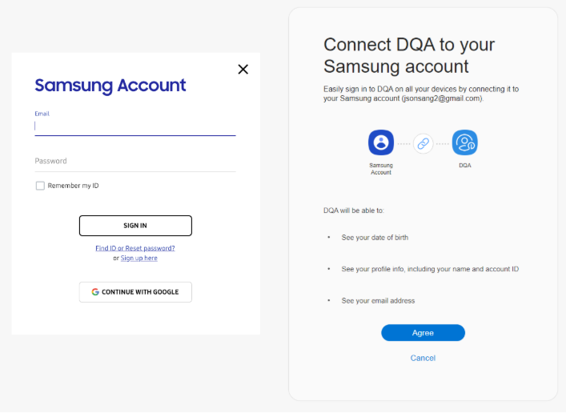

Authorize a user with Samsung Account
This first stage of third party integration with Knox Cloud Services consists of authorizing an end customer with Samsung Account to retrieve a Samsung Account access token.
1. Redirect a user to the Samsung Account login
When an end customer selects the Samsung Account login method in your portal, your server should call the signInGate endpoint to redirect the end customer to the Samsung Account login and authorization prompt.
Your request must include values for the following fields:
- ALIAS_ID — an identifier which maps the Samsung Account with the client ID
- client_id — the public client ID of your Samsung Account client.
- response_type — the response type; this should always be set to CODE.
- redirect_uri — a Samsung-registered URI specifying where the end customer should land after logging in through Samsung Account.
- state — an opaque value used to maintain the state between the request and callback to prevent cross-site request forgery. The authorization server includes this value as a query parameter when redirecting to the redirect_uri.
Here’s an example request to signInGate with the required parameters:
GET https://< Authorization Host URL>/accounts//signInGate?
client_id=xxxxxxxxx&
response_type=CODE&
redirect_uri=https://www.example.com&
state=XXXXXXXXXXXXXXXXXXXXXXXXXXXXXXXX&
The end customer will see a prompt like the one below after redirection to the Samsung Account page:

After the end customer logs in, the Samsung Account server redirects the browser to the redirect_uri specified in the request body.
You’ll find the response fields code and state as query parameters in the browser’s address bar.
Check that state matches the value sent in your request, and extract the code value from the body of the code query parameter, which you’ll exchange for a Samsung Account access token.
Note
To sign the user out, make a call to the signOutGate endpoint.
2. Get a Samsung Account access token
Next, exchange the authorization code for a Samsung Account access token with the token endpoint using your Samsung Account client ID and secret.
Make sure to include values for the following fields in your request body:
- client_id — your public Samsung Account client ID.
- client_secret — your Samsung Account secret key.
- grant_type — the OAuth 2.0 grant type; should always be set to authorization_code.
- code — the authorization code extracted from the
signInGateresponse. - redirect_uri — the same redirect_uri used when requesting the authorization code.
Here’s an example request body:
{
"client_id": <your Samsung Account ID>,
"client_secret": <your Samsung Account secret>,
"grant_type": "authorization_code",
"code": <authorization code>,
"redirect_uri": <redirect_uri>
}
If successful, the token endpoint returns an access_token along with the following fields (shown below) in the response body. Save this Samsung Account access token to embed in your request for a KCS session token.
Example token response:
{
"access_token":"abc123...",
"token_type": "Bearer",
"access_token_expires_in": 3600,
"expires_in": 3600,
"refresh_token": -1,
"refresh_token_expires_in": -1,
"userId": "y0zpz..."
}
Next
Generate a Knox Cloud Services signed access token
See also:
Is this page helpful?